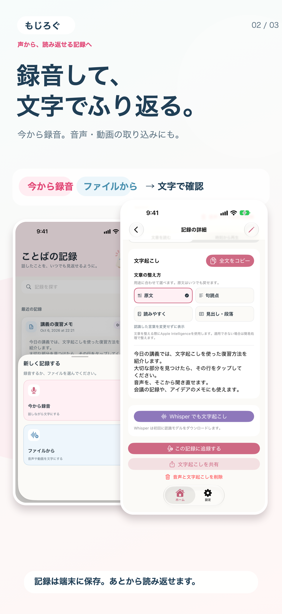
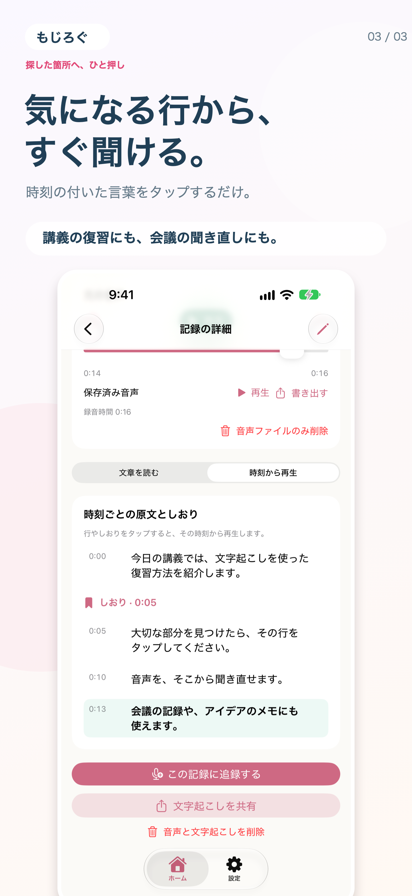

録音しながら文字に
録音中は速報を表示。高精度方式では録音後に全文を仕上げます。
聞くことに集中しよう。
話したことをその場で文字に。あとで文章を読み返し、気になる行から音声を再生できます。
App Storeへのリンクは公開後に掲載します。
講義、会議、インタビュー。話の流れをあとからたどれます。
録音中は速報を表示。高精度方式では録音後に全文を仕上げます。
保存した音声の文字起こしをタップし、その時刻から再生。
気になった瞬間に印を付けて、聞き返す場所を残せます。
保存した音声の書き出しや、文字起こしのコピー・共有に対応。
現行アプリの画面を使って、文字起こしと聞き返しをご紹介します。

